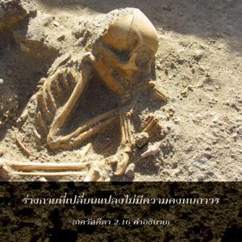
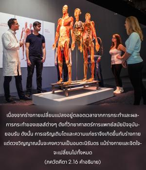
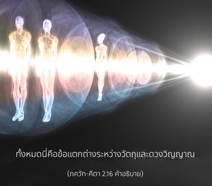

ผู้เห็นสัจธรรมได้สรุปไว้ว่า สำหรับสิ่งที่ไม่มีอยู่จริง (ร่างกายวัตถุ) จะไม่มีความคงทนถาวร และสำหรับสิ่งที่เป็นอมตะ (ดวงวิญญาณ) จะไม่มีการเปลี่ยนแปลง พวกเขาสรุปเช่นนี้จากการศึกษาธรรมชาติของทั้งสองสิ่ง



ร่างกายที่เปลี่ยนแปลงจะไม่มีความคงทนถาวร เนื่องจากร่างกายนั้นเปลี่ยนแปลงอยู่ตลอดเวลาจากการกระทำ และผลการกระทำของเซลส์ต่างๆ ดังที่วิทยาศาสตร์การแพทย์สมัยปัจจุบันยอมรับ ดังนั้น การเจริญเติบโตและความแก่ชราจึงเกิดขึ้นกับร่างกาย แต่ดวงวิญญาณนั้นจะคงความเป็นอมตะนิรันดร แม้ร่างกายและจิตใจจะเปลี่ยนไป ทั้งหมดนี่คือข้อแตกต่างระหว่างวัตถุและดวงวิญญาณ โดยธรรมชาติร่างกายนั้นมีการเปลี่ยนแปลงอยู่ตลอดเวลา แต่ดวงวิญญาณเป็นอมตะ ผลสรุปเช่นนี้ผู้พบเห็นสัจธรรมในทุกระดับได้ยืนยันไว้แล้ว ทั้งผู้ไม่เชื่อในรูปลักษณ์และผู้ที่เชื่อในรูปลักษณ์ ใน วิษฺณุ ปุราณ (2.12.38) กล่าวไว้ว่า องค์วิษฺณุ และที่ประทับของพระองค์มีรัศมีทิพย์ในตัวเอง (โชฺยตีํษิ วิษฺณุรฺ ภุวนานิ วิษฺณุห์ ) คำว่ามีอยู่จริง และไม่มีอยู่จริง หมายถึงดวงวิญญาณ และวัตถุเท่านั้น นั่นคือคำบอกเล่าของผู้ที่เห็นสัจธรรมทั้งหลาย
นี่คือจุดเริ่มต้นของคำสอนโดยองค์ภควานฺที่ให้แก่สิ่งมีชีวิต ผู้มีความสับสนมืดมนนั้นอยู่ภายใต้อิทธิพลของอวิชชา การขจัดอวิชชาจะต้องมีการสถาปนาความสัมพันธ์ที่เป็นอมตะระหว่างผู้บูชาและผู้ได้รับการบูชา จากนั้นจะต้องมีความเข้าใจข้อแตกต่างระหว่างสิ่งมีชีวิตอันเป็นละอองอณูและบุคลิกภาพสูงสุดแห่งพระเจ้า เราสามารถเข้าใจธรรมชาติขององค์ภควานฺด้วยการศึกษาตนเองอย่างละเอียดถี่ถ้วน ข้อแตกต่างระหว่างตัวเราและองค์ภควานฺ คือ ความสัมพันธ์ระหว่างเศษย่อยกับส่วนรวมทั้งหมด ทั้งใน เวทานฺต-สูตฺร และ ศฺรีมทฺ-ภาควตมฺ องค์ภควานฺ ทรงได้รับการยอมรับว่าเป็นแหล่งกำเนิดของสิ่งที่ปรากฏมาทั้งหมด การปรากฏเช่นนี้มีประสบการณ์จากทั้งธรรมชาติระดับสูงและธรรมชาติระดับต่ำ สิ่งมีชีวิตอยู่ในธรรมชาติที่สูงกว่าดังจะเปิดเผยในบทที่เจ็ด แม้ไม่มีข้อแตกต่างระหว่างพลังงานและแหล่งกำเนิดพลังงาน แหล่งกำเนิดพลังงานได้รับการยอมรับว่าคือองค์ภควานฺ และพลังงานหรือธรรมชาติได้รับการยอมรับว่าเป็นส่วนที่รองลงมา ฉะนั้น สิ่งมีชีวิตจะเป็นรององค์ภควานฺเสมอ ดั่งเช่นเจ้านายกับบ่าว หรืออาจารย์กับศิษย์ ความรู้ที่ชัดเจนเช่นนี้จะไม่สามารถเข้าใจได้สำหรับผู้ที่อยู่ภายใต้มนต์สะกดของอวิชชา เพื่อขจัดอวิชชานี้องค์ภควานฺทรงสอน ภควัท-คีตา เพื่อให้สิ่งมีชีวิตทั้งหลายได้รู้แจ้งสัจธรรมอันแท้จริงตลอดกาล